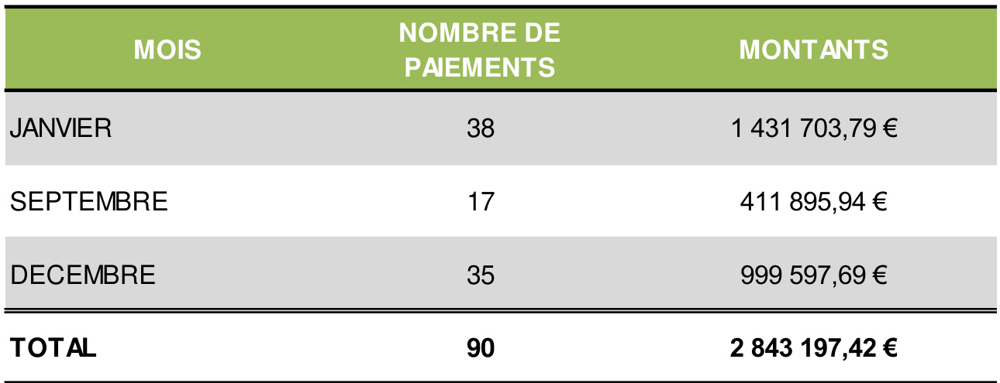

Le rapport de gestion présente le régime, l'activité et les évolutions récentes constatées, ainsi que des éléments prévisionnels.
Le bilan, le compte de résultat et l’annexe comptable
Le bilan décrit séparément, à la clôture de l’exercice, les éléments actifs et passifs du fonds et fait apparaître de façon distincte les capitaux propres.
Le compte de résultat récapitule les produits et les charges de l’exercice, sans qu’il soit tenu compte de leur date d’encaissement ou de paiement. Il fait apparaître par différence l’excédent ou le déficit de l'exercice.
L'annexe comptable complète et commente l’information donnée par le bilan et le compte de résultat, d’une part, en mettant en évidence tout fait significatif et, d’autre part, en indiquant toutes les explications nécessaires à une meilleure compréhension du bilan et du compte de résultat.
Les cabinets Mazars et PricewaterhouseCoopers audits effectuent une mission d’audit et de contrôle des comptes du fonds portant sur les comptes annuels ci-dessus mentionnés. À l’issue de leur intervention, ils émettent une attestation jointe au présent document.
I. LE RAPPORT DE GESTION
PRESENTATION GENERALE 6
FINANCEMENT DE L’INCITATION FINANCIERE POUR LE DEPART ANTICIPE A LA RETRAITE 6
PAIEMENTS
STATISTIQUES 8
BILANETCOMPTEDERESULTAT 11
RESULTATETRESERVES 14
FAITSCARACTERISTIQUES 15
EVENEMENTSPOST-CLOTURE 15
PRINCIPES GENERAUX 15
REGLESETMETHODESATTACHEESACERTAINSPOSTES 15
1: CREANCESETCOMPTESRATTACHES 16
2: DISPONIBILITES 16
3: CAPITAUX PROPRES 16
4: DETTESETCOMPTESRATTACHES 16
5: CHARGESD'EXPLOITATION 16
6: PRODUITSD'EXPLOITATION 16
III. CERTIFICATION DES COMPTES 17
La mairie de Fort-de-France propose à ses personnels un dispositif de départ à la retraite anticipée avec incitation financière, dont le financement est assuré dans le cadre de la Dotation Globale de Fonctionnement.
Ce dispositif s'adresse aux agents titulaires et non titulaires, âgés de 60 ans et plus.
Ces départs à la retraite font l'objet d'un paiement sous forme de capital au profit des agents.
Pour réaliser cette opération, elle a sollicité la Caisse des Dépôts qui a accepté la gestion administrative et financière du dispositif à partir du 1er avril 2002, dans le cadre d’une convention en date du 16 avril 2002 modifiée par une nouvelle convention en date du 26 janvier 2004.
Cette gestion est assurée par la direction des politiques sociales de la Caisse des Dépôts, au sein de la direction de la solidarité et des risques professionnels à l’établissement de Bordeaux.
Le paiement de l’incitation financière intervient à la demande de la ville de Fort-de-France qui indique à la Caisse des Dépôts les coordonnées du bénéficiaire ainsi que le montant du capital à libérer.
En contrepartie de ses prestations, la Caisse des Dépôts perçoit une rémunération représentant les frais engagés pour sa gestion.
Le dispositif est alimenté par la ville de Fort-de-France en fonction des besoins.
La mairie de Fort-de-France a assuré le financement du fonds pour 2020 à hauteur de 1 412 093,62 €.
Le paiement de l’incitation financière intervient à la demande de la ville de Fort-de-France qui indique à la Caisse des Dépôts les coordonnées bancaires et postales du bénéficiaire ainsi que le montant du capital à libérer. Il s’agit d’un montant net, les retenues de cotisations sociales et les formalités fiscales étant assurées par la ville de Fort-de-France.
Le délai de la réalisation du paiement est fonction des disponibilités financières, qui sont en principe tenues en adéquation avec les besoins de financement.

FINANCEMENTS ET PAIEMENTS DES INDEMNITES DE DEPART A LA RETRAITE DE 2002 A 2020
FINANCEMENTS
PAIEMENTS
BILAN ET COMPTE DE RESULTAT
(en euros)
(en euros)
(en euros)
RESULTAT ET RESERVES
Le résultat déficitaire, d’un montant de 1 079 $\in$ sera affecté au compte de report à nouveau.
Le FMFF, retient l’approche ciblée, proposée par l’Autorité des Normes Comptables (ANC), pour décrire les impacts de la Covid-19 sur le bilan et sur le compte de résultat. Cette approche présente les principaux impacts jugés pertinents. LadDirection de la Caisse des Dépôts n'a pas identifié d’impact significatif sur les agrégats du Bilan et du Compte de résultat. En effet, le fonds finance un dispositif de départ à la retraite anticipée pour le personnel de la mairie de Fort-de-France.
A la date d’arrêté des comptes et des états financiers 2020 du fonds, la direction de la Caisse des Dépôts n'a pas connaissance d'incertitudes significatives qui remettent en cause la capacité du FMFF à poursuivre son exploitation. L’hypothèse de continuité d’exploitation qui sous-tend l’élaboration de ses comptes reste donc parfaitement pertinente.
EVENEMENTS POST-CLOTURE
Néant.
La comptabilité du Fonds de la mairie de Fort-de-France (FMFF) est tenue conformément aux dispositions du plan comptable général.
La nomenclature des comptes a été adaptée pour tenir compte de ses spécificités.
La comptabilisation des opérations effectuées par le FMFF est faite en application du principe du droit constaté, l'enregistrement des opérations en comptabilité étant effectué dès la naissance du droit qui la sous-tend (fait générateur).
Les documents de synthèse (bilan et compte de résultat) sont établis après ventilation des comptes de charges et de produits sur exercice antérieur.
La Caisse des Dépôts, en tant que gestionnaire, met à la disposition du FMFF des moyens en personnel, informatique et fonctionnement. En contrepartie de ses prestations, la CDC perçoit une rémunération représentant le montant des frais engagés pour la gestion du fonds.
En application de l’article 4 de la convention du 26 janvier 2004, la rémunération de la Caisse des Dépôts est limitée $\dot{\mathsf{a}}\,0,70\,\%$ du montant des prestations versées au cours de l’exercice.
La Cour des comptes a recommandé l’application de la TVA sur le montant des frais administratifs. Cette recommandation a été mise en œuvre à compter de l’exercice 2012.
CREANCES ET COMPTES RATTACHES
Le montant de 23 534 $\in$ est constitué d’un avoir sur les frais administratifs de 3 381 € et des produits restants à recevoir pour 2020 de la mairie de Fort- de -France pour 20 153 €.
Leur montant s’élève à 24 594 €.
Ils correspondent aux résultats cumulés depuis l’origine du fonds (27 976 $\in)$ .
Elles sont composées des charges à payer sur prestations 2020 pour 20 153 $\in$ qui seront versées au cours de l’année 2021 lorsque la subvention sera reçue de la part de la mairie de Fort de France.
Elles sont composées :
• de prestations versées au cours de l’exercice qui s’élèvent à 1 097 434 € et qui correspondent aux paiements de 39 dossiers pour l’année 2020 (contre 10 dossiers en 2019),
• de prestations à payer concernant 2 dossiers pour un montant de 20 153 $\epsilon,$
• des frais administratifs de $1~079\in$ pour l’exercice 2020.
Le montant total payé par le fonds en 2020 au titre de l’incitation financière de départ à la retraite anticipée représente 2 843 197 $\in$ (91 dossiers) :
1 097 434 € au titre de 2020
1 745 763 € au titre de 2019.
Le financement du fonds est assuré par la mairie de Fort-de-France.
Le montant de 1 117 587 $\in$ comptabilisé durant l’exercice correspond à onze versements reçus pour des dossiers 2020 pour un montant de 1 097 434 €, et à un financement à recevoir de 20 153 €.
En 2020, le financement total versé par la mairie de Fort-de-France s’élève à 1 412 094 € dont :
1 097 434 € au titre de 2020
314 660 € au titre de 2019.
III. CERTIFICATION DES COMPTES
PricewaterhouseCoopers Audit 63, rue de Villiers 92208 Neuilly-sur-Seine Cedex
Mazars 61, rue Henri Regnault 92400 Courbevoie